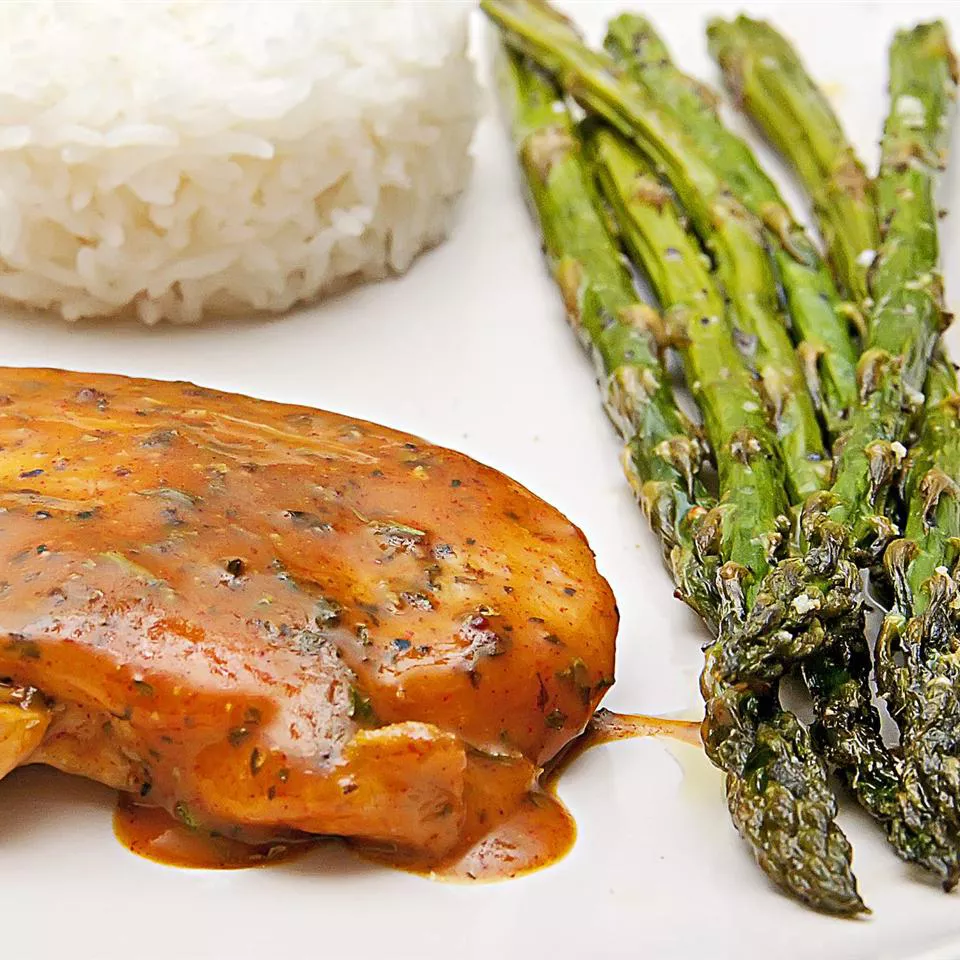

Baked Honey Mustard Chicken

Description
This honey mustard chicken is quick and easy to prepare, and the kids love it, too!
Ingredients
- cooking spray
- 6 skinless, boneless chicken breast halves
- salt and pepper to taste
- 1/2 cup honey
- 1/2 cup prepared mustard
- 1 teaspoon dried basil
- 1 teaspoon paprika
- 1/2 teaspoon dried parsley
Steps
- Preheat the oven to 350 degrees F (175 degrees C). Lightly grease a 9x13-inch baking dish with cooking spray.
- Season chicken breasts with salt and pepper. Place in the prepared baking dish.
- Combine honey, mustard, basil, paprika, and parsley in a small bowl; mix well. Pour 1/2 of the honey mustard mixture over chicken and brush to cover.
- Bake in the preheated oven for 30 minutes. Turn chicken pieces over and brush with remaining honey mustard mixture. Continue baking until chicken is no longer pink and juices run clear, 10 to 15 minutes more. An instant-read thermometer inserted into the center should read at least 165 degrees F (74 degrees C).
- Let cool 10 minutes before serving.
- 1/2 medium head cabbage, finely shredded
Steps
- Make beer batter: Combine flour, cornstarch, baking powder, and salt in a large bowl. Blend beer and egg in a separate bowl, then quickly stir into flour mixture until combined with a few lumps remaining.
- Make white sauce: Mix together yogurt and mayonnaise in a medium bowl. Gradually stir in fresh lime juice until consistency is slightly runny. Season with jalapeño, capers, cayenne, oregano, cumin, and dill.
- Start fish tacos: Heat oil in a deep-fryer to 375 degrees F (190 degrees C).
- Dust fish pieces lightly with flour. Set aside.
- Dip floured fish pieces into beer batter. Set aside.
- Fry in hot oil until crisp and golden brown. Drain on paper towels. Lightly fry tortillas in hot oil until just crisped, but not too crisp. Drain on paper towels.
- Place fried fish in tortillas; top with shredded cabbage and white sauce.